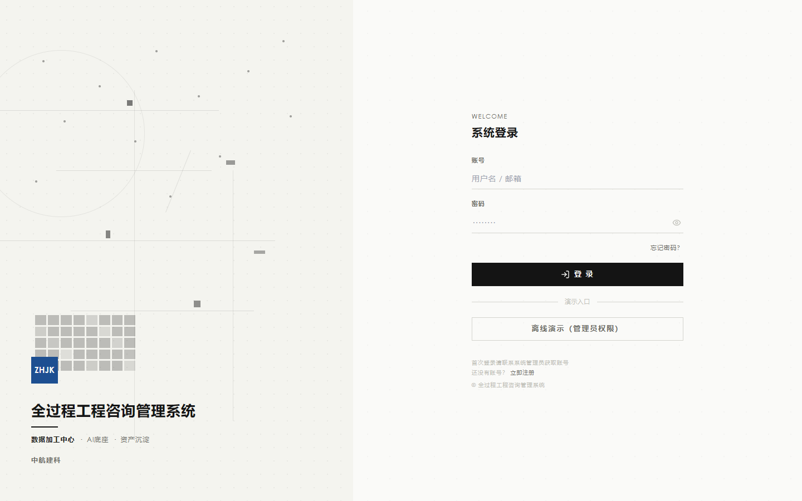
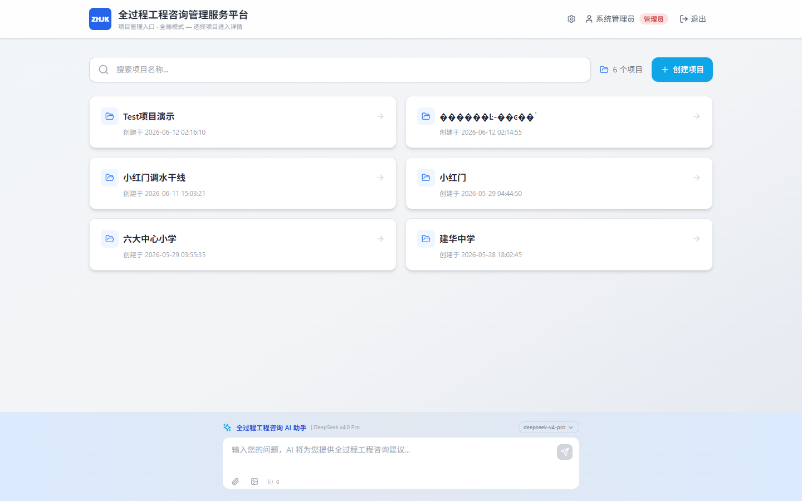
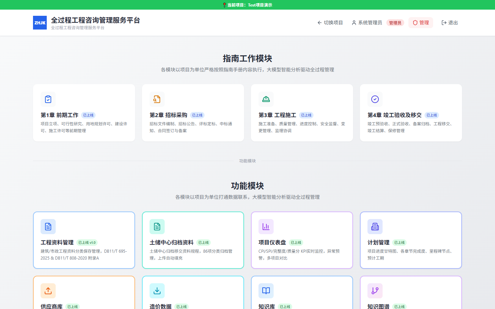
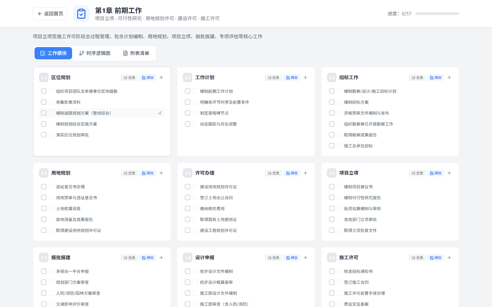
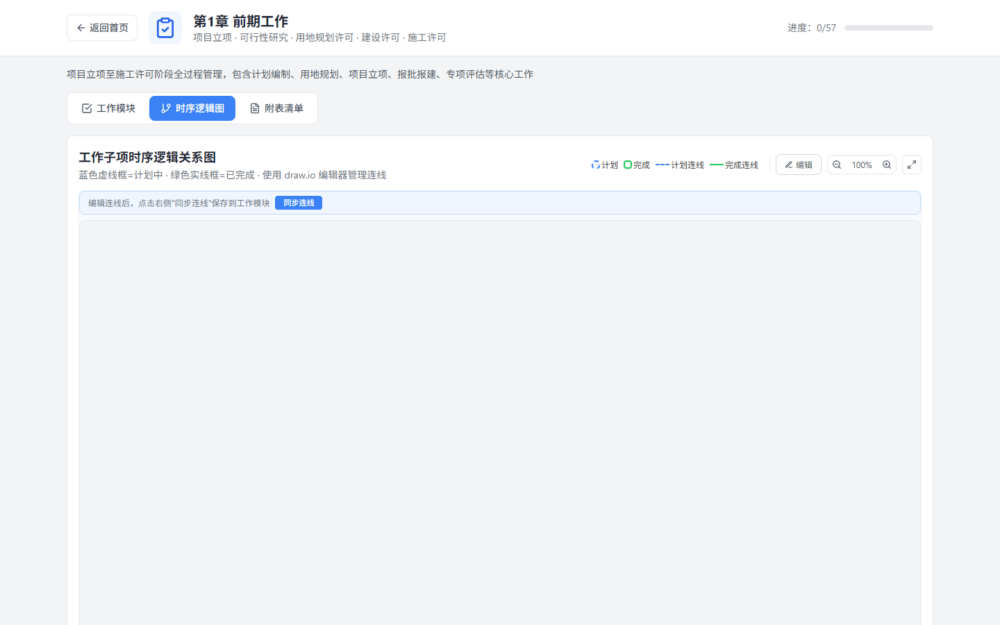
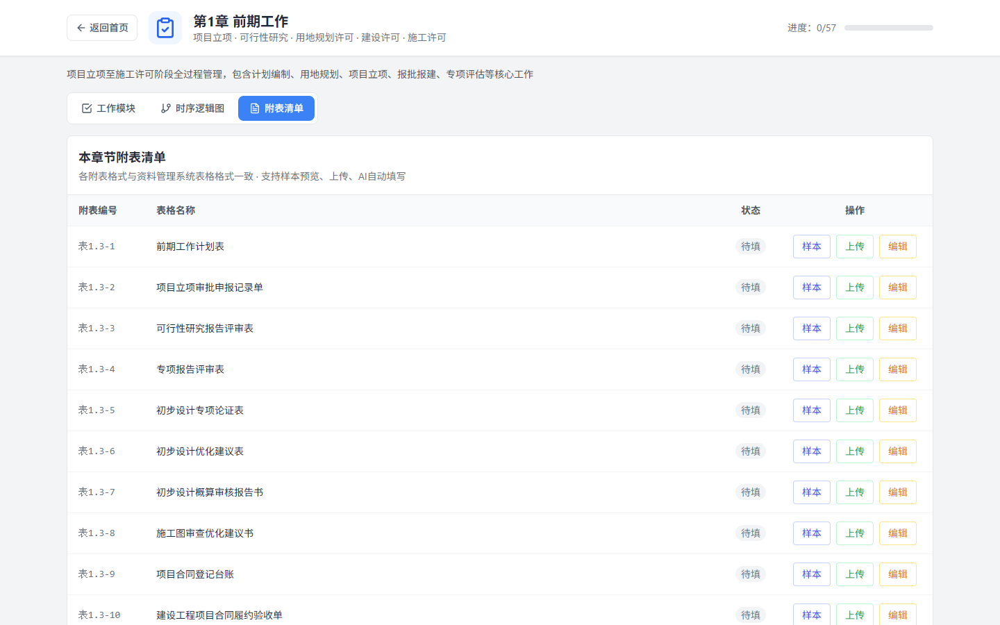
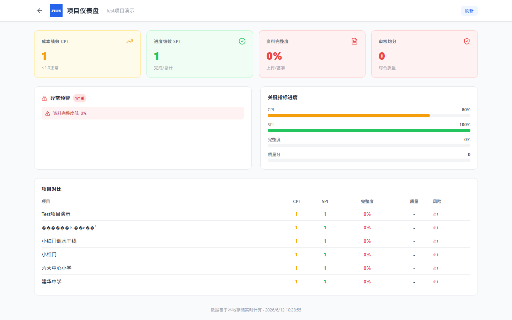

使用说明 · v1.7.0 · 2026年6月
deploy\start.bat（自动安装依赖+启动前后端）bash deploy/deploy.sh ｜ Docker：docker-compose up -dhttp://localhost:5173（开发）或 http://localhost（Docker）
图1：系统登录页面 — 用户名密码登录 + 模块状态网格
| 区域 | 说明 |
|---|---|
| 品牌Logo区 | 左上角显示系统名称"ZHJK"和全称 |
| 登录表单 | 用户名/密码输入框 + 「登 录」提交按钮 |
| 注册入口 | 「立即注册」按钮，新用户注册后需管理员审批 |
| 离线演示 | 「离线演示」按钮，无需后端即可体验系统 |
| 模块状态网格 | 40个方块表示系统功能模块状态（高亮=已启用） |

图2：项目入口页面 — 项目卡片列表 + AI助手栏
| 区域 | 说明 |
|---|---|
| 顶部导航 | 系统名称 + 当前用户信息 + 角色标签 + 退出/管理入口 |
| 搜索栏 | 输入关键词实时筛选项目，右侧显示项目总数 |
| 「创建项目」按钮 | 点击创建新项目，弹出输入对话框 |
| 项目卡片 | 显示项目名称、创建时间、指南进度条。点击进入项目，双击名称重命名，悬停右下角显示编辑按钮 |
| 进度条 | 指南工作模块完成进度 (已完成/总项数)，绿蓝色渐变 |
| 底部AI栏 | 输入工程咨询相关问题，按Enter发送给AI。支持文件/图片上传、模型切换 |

图3：进入项目后的首页 — 指南工作模块 + 功能菜单
| 区域 | 说明 |
|---|---|
| 左侧分类目录 | A/B/C/D类工程资料分类导航，支持建筑和市政双规程切换 |
| 资料明细表 | 包含工程资料名称、表格编号、规范依据、4方归档单位（施工/监理/建设/档案馆） |
| 上传按钮 | 每条资料右侧上传按钮，支持PDF/Word/Excel/图片/CAD等13种格式，≤50MB，自动版本管理 |
| 指南模块入口 | 4大章节卡片（前期工作/招标采购/工程施工/竣工验收），点击进入指南工作模块 |
| 工具栏 | 规程切换、筛选搜索、CSV导出、ZIP打包下载、AI按钮、备份按钮、管理后台 |
| 仪表盘入口 | 点击查看项目KPI指标（CPI/SPI/完整度/质量评分） |

图4：指南工作模块 — 子模块卡片 + 工作项列表
| 功能 | 操作说明 |
|---|---|
| 章信息 | 顶部显示章节标题和进度（已选/总量百分比）+ 撤销按钮（最近5步） |
| 标签切换 | 工作模块 / 时序逻辑图 / 附表清单 三个Tab页面切换 |
| 子模块卡片 | 每个卡片显示编号、名称（可点击重命名）、全选/取肖、保存模板、添加工作项 |
| 工作项勾选 | ☐ 未选 → ☑ 蓝色(计划中) → ☑ 绿色(已完成)。两步确认机制 |
| 自定义工作项 | 「+」按钮添加工作项，可设置名称、时长、附件格式、前后置依赖 |
| 附件上传 | 「修改」按钮 → 选择文件 → 自动版本编号(V1/V2/V3...) → 上传人+日期自动记录 |
| 附件管理 | 工作项右侧 📎N 显示附件数，点击展开文件名+版本号，悬停显示删除按钮 |
| 模板保存 | 「模板」按钮将子模块保存为模板，供其他章节复用 |

图5：时序逻辑图 — draw.io嵌入式编辑器，泳道图展示工作项间时序关系
| 功能 | 说明 |
|---|---|
| 自动布局 | 按子模块分列生成泳道图，每个已勾选的工作项显示为卡片节点 |
| 连线颜色 | 蓝色虚线=计划中；绿色实线=双方均已完成 |
| 编辑模式 | 开启后可拖拽节点、创建连线、编辑标签 |
| 同步连线 | 编辑完成后点击「同步连线」保存到工作模块 |
| 缩放控制 | 25%-200%自由缩放 + 适应页面按钮 |
| 重置 | 一键清除连线和位置，恢复默认布局 |
| 图例 | 顶部显示颜色和连线样式说明 |

图6：附表清单 — 样本预览 + 上传 + AI自动填写
| 功能 | 说明 |
|---|---|
| 样本预览 | 点击「样本」按钮查看附表模板格式和填写说明 |
| 文件上传 | 「上传」提交实际填写的表单文件（PDF/Word/Excel/图片） |
| AI自动填写 | 「编辑」→「AI自动填写」→ AI根据表单类型自动生成规范内容 |
| 导出文本 | 编辑完成后导出为TXT文件 |
| 附表总数 | 底部显示当前章节附表总数统计 |

图7：项目编辑对话框 — AI智能填写 + 文件上传 + 自定义字段
| 功能 | 说明 |
|---|---|
| AI自动填写 | 根据项目名称或上传的项目概况文档，AI智能提取建设规模、面积、投资额、管线信息 |
| AI分析报告 | 生成风险分析、进度评估、成本优化、质量控制专业报告，支持下载 |
| 项目概况 | 多行文本输入，描述项目基本信息 |
| 指标字段 | 建筑面积/建设规模/投资额/市政管线，2列布局 |
| 项目概况文件上传 | 上传PDF/Word/Excel/TXT等文档，AI可读取内容智能提取关键字段 |
| 自定义字段 | 添加任意键值对扩展项 |
以下模块通过首页工具栏或菜单入口访问：
| 模块 | 入口 | 功能说明 |
|---|---|---|
| 项目仪表盘 | 首页→进入项目→仪表盘 | CPI/SPI/完整度/质量评分4项KPI + 告警列表 + 多项目对比 |
| 计划管理 | 首页工具栏 | 甘特图可视化 + CPM关键路径法网络图 + Excel计划导入 |
| 供应商库 | 首页→供应商 | 供应商信息CRUD管理 |
| 造价数据 | 首页→造价 | 造价数据管理与成本分析 |
| AI智能助手 | 首页工具栏「AI」按钮 | 全页聊天界面 + 项目上下文感知 + 多模型切换 + 视觉识别 + 文件分析 |
| 智能分析中心 | 首页→智能分析 | 周期性扫描/异常检测/AI建议 |
| 知识库 | 首页→知识库 | 全文搜索(lunr.js) + 语义搜索(向量化) + 文档上传 |
| 知识图谱 | 首页→知识图谱 | 工程管理领域知识网络可视化 |
| 政策库/制度规范库 | 首页→政策库/制度规范 | 政策法规分类浏览/全文搜索/附件管理 |
| 土储中心归档 | 首页→土储归档 | 86项标准归档清单 + 项目对照 + 示例数据(小红门) |
| 数据备份 | 首页工具栏「备份」 | 单项目/全量 ZIP打包下载，安全Header传输token |
| 管理后台 | 首页右上角齿轮图标(管理员) | 用户CRUD、权限分配、账号审批、项目管理 |
| 防护项 | 实现 |
|---|---|
| SQL注入 | 所有查询参数化(?占位符) |
| 路径遍历 | isPathSafe()验证 + path.basename()净化 |
| 文件类型 | 13种白名单，拒绝.exe等 |
| 文件大小 | 单文件≤50MB, JSON≤100MB |
| 暴力破解 | 登录15分/10次, 注册1小时/5次 |
| 密码 | bcrypt 10轮salt哈希 |
| 认证 | UUID Session Token + 24h过期 |
| CORS | 生产环境未配置时拒绝跨域 |